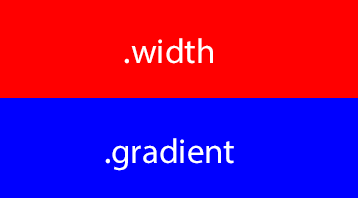

✔ ✘ 

Виталий Зюзин
Кто виноват и что делать?
Виталий Зюзин
Разработчик интерфейсов в HTML Academy
2016
<div class="pie"></div>
.pie {
width: 100px;
height: 100px;
border-radius: 50%;
background-color: yellowgreen;
}
.pie {
width: 100px;
height: 100px;
border-radius: 50%;
background-color: yellowgreen;
background-image:
linear-gradient(to right, transparent 50%, #665555 0);
}
.pie::before {
content: "";
display: block;
height: 100%;
margin-left: 50%;
border-radius: 0 100% 100% 0 / 50%;
background-color: inherit;
transform-origin: left;
}
.pie::before {
content: "";
display: block;
height: 100%;
margin-left: 50%;
border-radius: 0 100% 100% 0 / 50%;
background-color: inherit;
transform-origin: left;
transform: rotate(0.25turn);
}
Баг #141008 в WebKit.
Safari не поддерживает отрицательные значения
animation-delay.
<div class="flex-container"><div class="flex-item"></div><div class="flex-item"></div><div class="flex-item"></div><div class="flex-item"></div></div>
.flex-container {display: flex;align-items: stretch;}.flex-item {flex-basis: 150px;min-height: 100px;}
.flex-container {
display: flex;
align-items: stretch;
flex-wrap: wrap;
align-content: flex-end;
}
.flex-item {
flex-basis: 150px;
min-height: 100px;
}
Спецификация изменилась. Многострочный контейнер теперь тот, которому задан
flex-wrap: wrap. Даже если строка в контейнере одна.
<div class="width"></div><div class="gradient"></div>
.width {width: 35%;background-color: red;}.gradient {background-image: linear-gradient(to right,blue 35%, transparent 35%);}
Баг #233879 в Blink.
Ширина
width не равна ширине
linear-gradient.
<div class="gradient"></div>
body {
background-color: skyblue;
}
.gradient {
width: 100%;
height: 200px;
background-image: linear-gradient(to right, white, transparent);
}
rgba(255, 255, 255, 1)
→
rgba(0, 0, 0, 0)
Спецификация изменилась.
Баг #150940 в WebKit. Safari не использует технику pre-multiplied sRGBA.
transparent в линейных градиентах в Safari.Опишите проблему подробно, предложите обходной путь.
Виталий Зюзин, HTML Academy